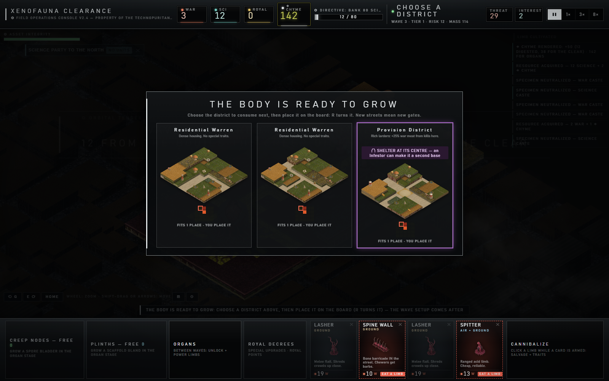
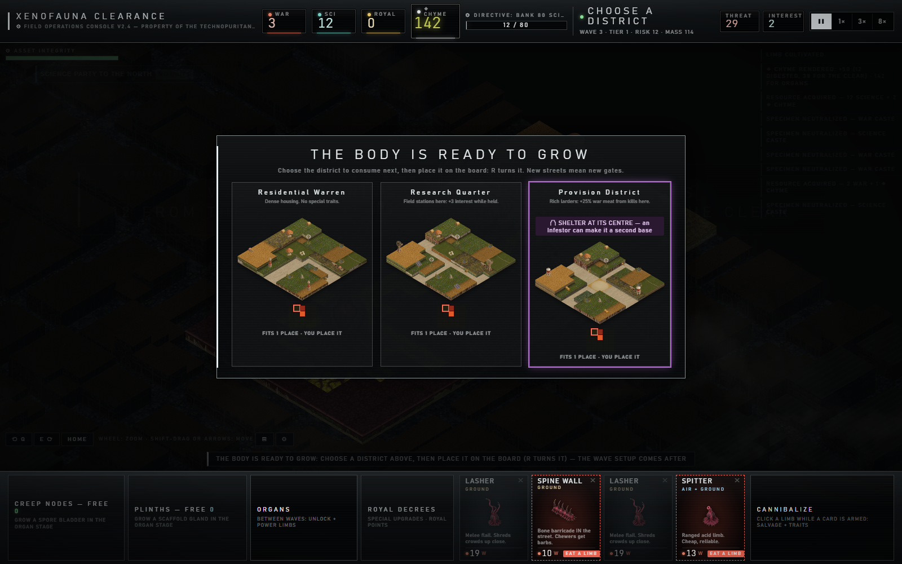
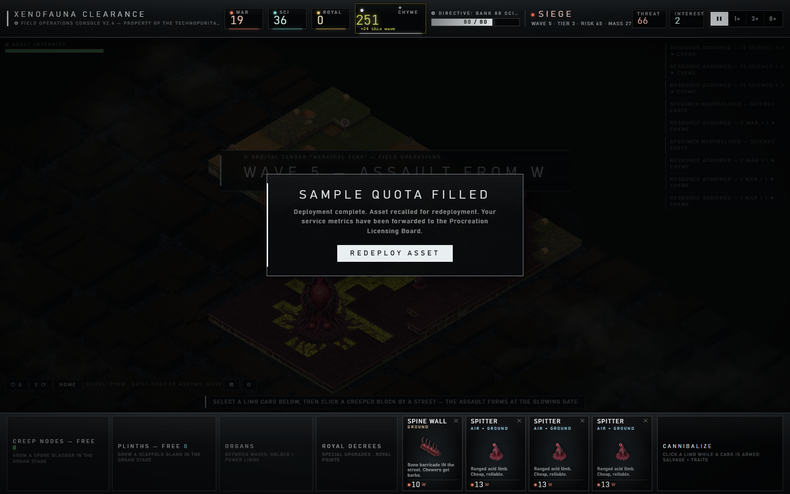
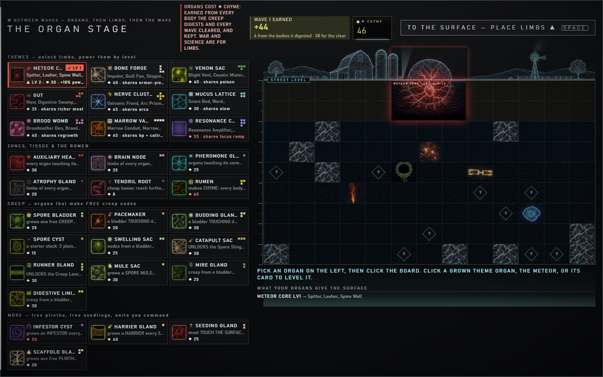

What the gameplay loop isn't thinking through
Broodfall, Nov 23 2026. I played it silently: headless with the sound muted, nothing on your screen. Sources:
- One skirmish in the real page, played through the play API, seed 11, photographed at every stage.
- The test bot over 6 full hold-12 runs, measured wave by wave.
- The test bot over 10 runs of each of the three skirmish orders.
- How long a skirmish lasts is a hidden coin flip: 4 minutes, 9 minutes or 20.
- Every run is easy: the bot wins all 30, and waves 2 to 5 do no damage.
- By wave 9 the bot owns every organ, so the organ stage has no choices left.
- From wave 9 on, most science meat goes to waste.
- Royal meat basically never shows up in a skirmish.
Scoreboard
| Part of the loop | Verdict | The evidence, in a line |
|---|---|---|
| The fight itself (limbs, sacrifice, creep, waves) | works | Late waves cost 10-20 limbs and 70-230 core HP each; you have to rebuild |
| District draft | fixed today | "Residential Warren, Residential Warren, Provision District" → three different cards |
| Skirmish length | lottery | Harvest ends at wave 5 (4 min), royal at wave 8 (9 min), hold at wave 12 (20 min), drawn at random |
| Difficulty at one gate | too easy | The bot wins 30 of 30. Waves 2-5: zero core damage |
| Organ stage, late | runs dry | All 24 organs owned by wave 9. After that it's only "level something" |
| Organ stage, short runs | skippable | I won a harvest run with 0 organs and 251 chyme unspent |
| Science meat, late | wasted | Waves 9-11: 60-86% of science earned is lost when the next wave starts |
| Royal meat in skirmish | missing | About 5 royal per 12-wave run, all in wave 8, so Royal Decrees barely come up |
| The hand | grey most of the time | No card affordable 50-90% of the time; late waves discard 5-6 cards each |
The fix made today: no duplicate district cards
Drafts used to pick three offers that differed by where they would grow. Since yesterday you choose where to put the district, so two offers that differed only by place became the same card twice. Now the three cards always carry three different features (Warren, Research Quarter, Provision District, Temple Heights). It uses no new dice, so the rest of a run plays out the same. There is a new test over 40 boards, and all 938 tests pass.


1. A skirmish's length is a hidden coin flip
A skirmish draws its order at random: hold 12 waves, kill the royal, or bank 80 science. The bot on 10 seeds each:
| Order | Wins | Ends in wave | Game time | Organs grown |
|---|---|---|---|---|
| Bank 80 science | 10/10 | 5 (every run) | 4.2 min | 5.5 |
| Kill the royal | 10/10 | 8 (every run) | 8.6 min | 15.2 |
| Hold 12 waves | 10/10 | 12 | 20.1 min | 24 |
The harvest run ends partway through wave 5, before the waves have had a chance to get hard. That is exactly what I saw in the real page: "SAMPLE QUOTA FILLED" mid-siege, with 10 limbs, no organs, and the core never touched. The royal order always ends on wave 8, because that is the wave the royal is guaranteed to show up.

The real page, seed 11: won in wave 5 with zero organs and 251 chyme never spent.
2. Every run is easy at one gate
The bot doesn't play well (it never commands units or burrows), and it still wins every one of the 30 runs above. Waves 2 to 5 do no damage to the core at all. Danger shows up around wave 6 (51 HP that wave, then 134 and 229). The 2-3 gate wager is the only setting that makes a run hard. Without it, the first third of every run has no danger, and a harvest run never gets any.
3. The organ stage runs out of choices
Chyme rises from about 46 a wave to about 210 by wave 9. A new organ costs 20-60, so late in a run the shop can't absorb the income. The bot owns all 24 organs it can grow by wave 9, and after that it only levels them up. The whole list of 28 organs is also open at wave 1 of a skirmish, so a run doesn't unlock anything as it goes. In short runs it's the opposite problem: the harvest order ends before the organs matter.

After wave 1: every organ in the game is already on the shelf.
4. Late in a run, science meat is wasted
War and science left unspent are lost when the next wave starts. War mostly gets spent, but science doesn't once the evolutions are bought:
| Wave | Science earned | Science lost at next wave | Lost |
|---|---|---|---|
| 6 | 81 | 32 | 40% |
| 9 | 336 | 204 | 61% |
| 10 | 174 | 133 | 76% |
| 11 | 322 | 278 | 86% |
So in the late game, killing science-caste bodies pays out mostly in meat you can't use. The researchers are the most interesting enemy, and by then they're worth almost nothing.
5. Royal meat is missing from skirmish
Across 6 whole hold-12 runs the bot earned about 5 royal meat per run, all of it in one royal event in wave 8, and none in the other 11 waves. The Royal Decrees panel sits on the bar the whole run with nothing to buy. In a skirmish, the "jackpot that is also the hardest fight" design never happens.
6. The hand is grey most of the time
Sampled every half second, no card in the hand was affordable 92% of the time in wave 1 and still 48-68% in the late waves. Meat comes in a body at a time and gets spent the moment it covers a card. Moment to moment, the loop is "wait for the bank, then click". The other cost is choice: late waves discard 5-6 cards each, so the 4-card hand is often holding the wrong limbs. Part of this is just how the bot plays, but a person sees the same grey hand.
Your decisions
Technical notes for an engineer or an AI: the measurements are tools/measure/loop.measure.ts and tools/measure/directives.measure.ts; the draft fix is in src/sim/citymap.ts draftOffers, with tests/draft-distinct.test.ts.